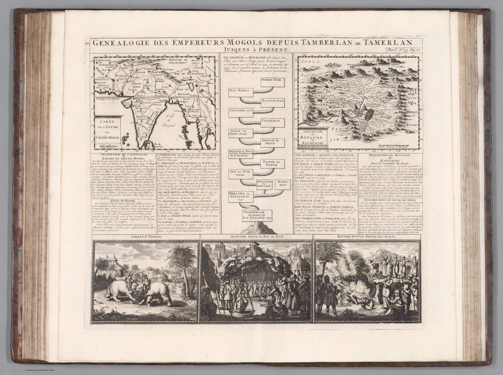

← The Great Mogul and the Companies

More than a map
The sheet centres a genealogy of the Mughal emperors from Timur to the early eighteenth century. It also includes maps of the Mughal Empire and Kashmir, descriptive text and three scenes below: an elephant combat, the ruler weighed against gold and a cremation ceremony.
The historical atlas
Henri Chatelain’s Atlas Historique, with text associated with Nicolas Gueudeville, sought to join geography to chronology, genealogy, politics and customs. A place could not be understood by outline alone; the atlas surrounded the map with the information expected of universal history.
Translation into European forms
The Mughal succession is presented as a genealogical tree familiar from European dynastic history. That device makes the empire intelligible to the intended reader but also recasts it within a European representational convention. The accompanying vignettes alternate between information and spectacle.
The gaze
The family tree sits at the centre of the page, and that placement tells the reader what matters. Chatelain’s India is first a dynasty, then a territory, then a set of customs to be looked at – the elephant combat and the weighing of the emperor supply the page’s entertainment. Everything the Mughals were is fitted to the format of a European princely house.
In the Deccan timeline
Aurangzeb dies at Ahmadnagar (3 March 1707) · Shahu, Balaji Vishwanath and the sanads of 1719 (1719)